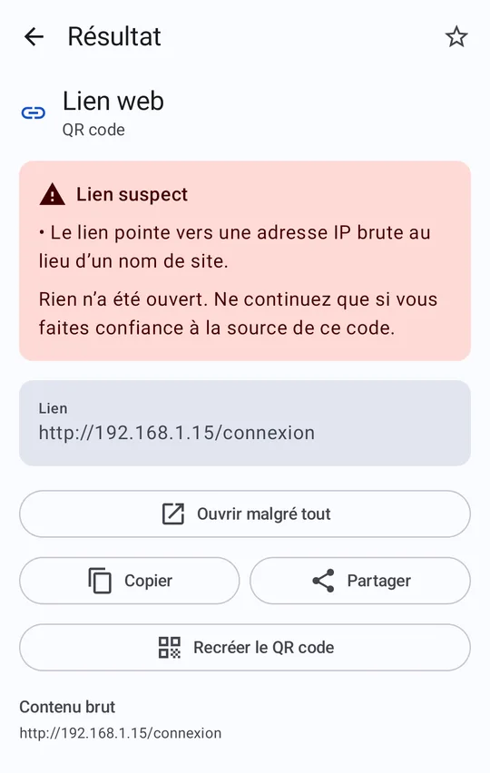
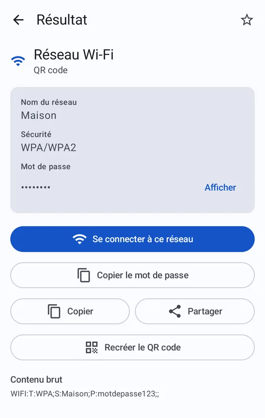
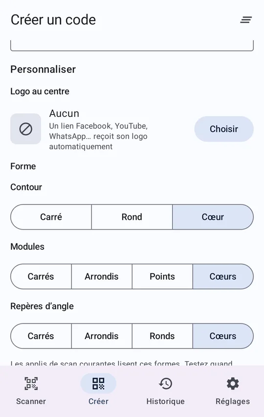
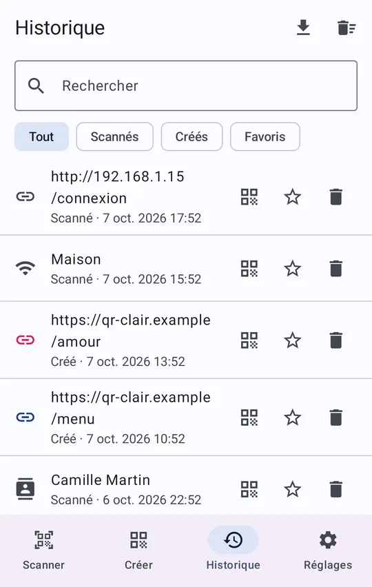
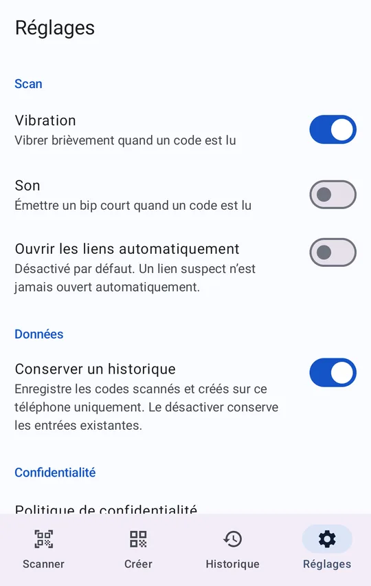
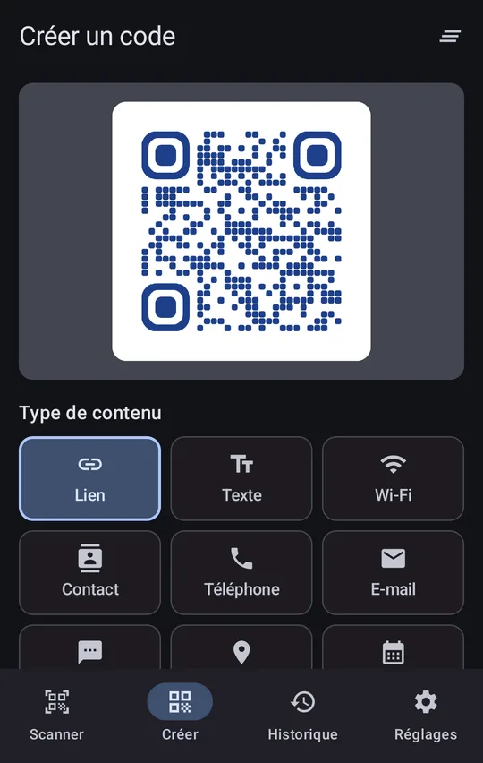

QR Clair
QR ClairTout pour scanner et créer
Simple au quotidien, soigné jusque dans les détails.
Scan instantané
La caméra s’ouvre directement. QR code, EAN/UPC, Code 128, Data Matrix, PDF417, ou lecture depuis une image de la galerie.
Alerte sur les liens suspects
Lien raccourci, adresse IP brute, faux domaine : vous êtes prévenu, et rien ne s’ouvre tout seul.
Tous les contenus
Lien, Wi-Fi, contact, e-mail, SMS, téléphone, position, événement ou texte, avec l’action adaptée en un geste.
QR codes à votre image
Couleur, logo au centre, cadre en cœur ou rond, modules et repères d’angle au choix, avec aperçu en direct.
Export PNG et SVG
Enregistrez dans la galerie, partagez, ou exportez en vectoriel pour l’impression.
Historique privé
Recherche, favoris, export CSV, désactivable. Recréez un code à l’identique en un geste.
Aperçu
Faites défiler pour voir les écrans.






Vos données restent chez vous
Ni compte, ni serveur : l’analyse des codes se fait sur votre téléphone, et l’historique n’en sort jamais.
L’appli est gratuite grâce à un seul bandeau publicitaire (Google AdMob), jamais sur l’écran de scan ni sur le résultat, avec votre consentement là où la loi l’exige.